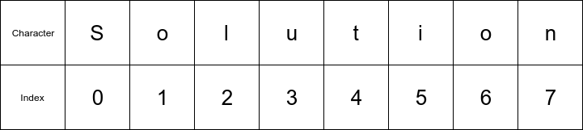

Strings
Contents
3.4. Strings#
Another built-in Python data type is strings. Strings are sequences of letters, numbers, symbols, and spaces. In Python, strings can be almost any length and can contain spaces. Strings are assigned in Python using single quotation marks ' ' or double quotation marks " ".
>>> string = 'z'
>>>> type(string)
<class 'str'>
>>> string = "Engineers"
>>> type(string)
<class 'str'>
The output <class 'str'> indicates the variable is a string.
Numbers as Strings#
Numbers and decimals can be defined as strings too. If a decimal number is defined using quotes ' ', the number is saved as a string rather than as a float. Integers defined using quotes become strings as well.
>>> num = '5.2'
>>> type(num)
<class 'str'>
>>> num = '2'
>>> type(num)
<class 'str'>
Strings as Boolean Values#
Strings can be converted to boolean values (converted to True or False). The empty string "" returns as False. All other strings convert to True.
>>> name = "Maelle"
>>> bool(name)
True
>>> empty = ""
>>> bool(empty)
False
Note, a string that contains just one space (" ") is not empty. It contains the space character. Therefore a string made up of just one space converts to True.
>>> space = " "
>>> bool(space)
True
String Indexing#
String indexing is the process of pulling out specific characters from a string in a particular order. In Python, strings are indexed using square brackets [ ]. An important point to remember:
Consider the word below.
Solution
The letter S is at index zero, the letter o is at index one. The last letter of the word Solution is n. n is in the seventh index. Even though the word Solution has eight letters, the last letter is in the seventh index. This is because Python indexing starts at 0 and ends at n-1.

>>> word = 'Solution'
>>> word[0]
'S'
>>> word[1]
'o'
>>> word[7]
'n'
If the eighth index of the word Solution is called, an error is returned.
>>> word[8]
IndexError: string index out of range
Negative Indexing#
Negative indexes start from the last character in a string and count down to the first character in a string.
Place a negative number inside of the square brackets to pull a character out of a string starting from the end of the string.
>>> word[-1]
'n'
>>> word[-2]
'o'

String Slicing#
String slicing is an operation to pull out a sequence of characters from a string. In Python, a colon on the inside of the square brackets between two numbers in a slicing operation indicates through. If the index [0:3] is called, the characters at positions 0 through 3 are returned.
Remember Python counting starts at 0 and ends at n-1. So [0:3] indicates the first through third letters, which are indexes 0 to 2.
>>> word[0:3]
'Sol'
A colon by itself on the inside of square brackets indicates all.
>>> word[:]
'Solution'
When three numbers are separated by two colons inside of square brackets, the numbers represent start : stop : step. Remember that Python counting starts at 0 and ends at n-1.
>>> word[0:7:2] #start:stop:step
'Slto'
When two colons are used inside of square brackets, and less than three numbers are specified, the missing numbers are set to their “defaults”. The default start is 0, the default stop is n-1, and the default step is 1.
The two code lines below produce the same output since 0 is the default start and 7 (n-1) is the default stop. Both lines of code use a step of 2.
>>> word[0:7:2]
'Slto'
>>> word[::2]
'Slto'
Reversing a String#
The characters that make up a string can be reversed by using the default start and stop values and specifying a step of -1.
>>> word[::-1]
'noituloS'